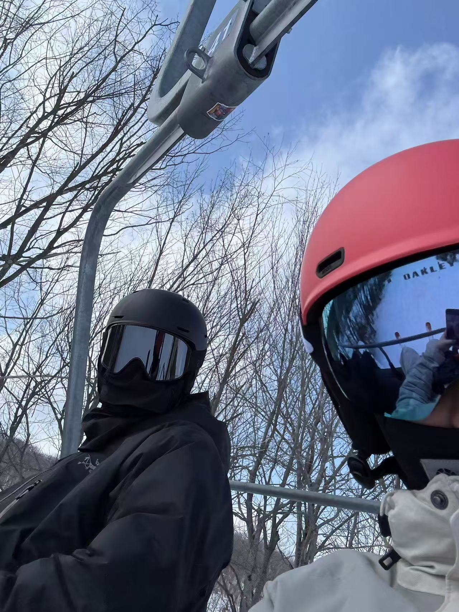

Hello! My name is Cody Peng and this website introduces a little bit about me. I am currently studying Economics and Data Science at Northeastern University. I am also a third year student looking for coop. I have studied and interested in learning coding and data based languages. During spare time, i like to do gym works, golf and skiing. Although i looks skinny, i have been training for two years and i really enjoy the empulse of gaining musle. I started golfing last summer and i spent a great time playing it in Miami this spring break. Skiing is the skill i gained this winter and i really enjoy this sport! Outdoor sports are something I really enjoy because they help me relax and stay active. I also like learning about how data processing and coding can help communicate information clearly and effectively. In the future I hope to work in areas that combine technology, data, and economic impact. Outside of curriculum, i love the study of philosophy and i have attended some classes about it. I love diving into the profound thinking of human natures but i hate the amount of reading that i get from these courses. This website includes another page that talks more about our topic .
Email: peng.junx@northestern.edu